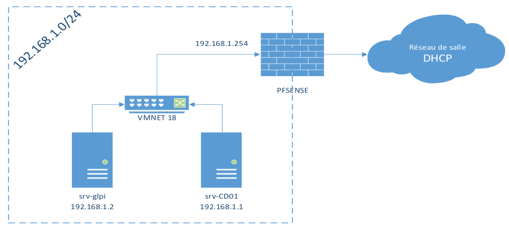

Transcription du document du Drive TSSR. La mise en forme est adaptée au Web ; les compléments IA du portail sont présentés séparément.
Module 01 – Présentation de l'environnement - Installation de GLPI
1
Objectifs
• Présentation de l’environnement de formation
• Présentation du projet GLPI par son site internet
• Présentation des principaux composants logiciels nécessaires
• Installation du service de base de données MySQL/MariaDB
• Installation du service Web Apache2
• Installation de l’interpréteur PHP et des modules requis par GLPI
• Récupération du code de GLPI et lancement du paramétrage initial
2
N
Présentation de l'environnement – Installation de GLPI
3
Présentation de l'environnement – Installation de GLPI
Environnement de la semaine
Réseau de salle
192.168.1.254
DHCP
PFSENSE
VMNET 18
srv-glpi
srv-CD01
192.168.1.1
192.168.1.2
4
D
NW
SS
on
>
>
Ÿ
>
<

Présentation de l'environnement – Installation de GLPI
Contexte
Administrateur système / bureautique
• Mise en place d’un GLPI au sein de l’entreprise
• La gestion et l’hébergement par Olympus
• Authentification centralisée et habilitations GLPI dynamiques
• Inventaire du matériel d’Olympus
• Traitement uniformisé et automatisé des tickets
• Inventaire régulier des machines de l’entreprise Olympus
5
Présentation de l'environnement – Installation de GLPI
6
N
Présentation de l'environnement – Installation de GLPI
Présentation de GLPI
• G.L.P.I : Gestion Libre de Parc Informatique
• ITSM (IT Service Management) conforme ITIL
• Logiciel libre sous licence GPL 100% libre
• Logiciel complet pour la gestion de parc et centre de services
• Plusieurs langues et plug-ins de disponibles
• Installation possible sous Windows et Linux
• Pour les petits comme les grands systèmes d’information
7
Présentation de l'environnement – Installation de GLPI
8
N
Présentation de l'environnement – Installation de GLPI
Installation – Serveur Web
• Application web : nécessite un serveur web avec le moteur PHP
• Linux : Apache2 ou Windows : IIS avec PHP ou Nginx avec PHP
• Installation sous Linux : paquets apache2.4 et php7.4
• Extensions PHP obligatoires / recommandées :
• php-mysql
• php-ldap
• php-bz2
• php-mbstring
• php-xmlrpc
• php-apcu-bc
• php-curl
• php-imap
• php-cas
• php-gd
• php-intl
• php-xml
• php-zip
9
Présentation de l'environnement – Installation de GLPI
Installation – Serveur de base de données
Installation – Serveur de base de données
• GLPI a besoin de stocker des informations en base de données et pour
cela il utilise un SGBD (Système de Gestion de Base de Données)
•
SGBD pris en charge par GLPI
•
MySQL
•
MariaDB
•
Installation de MariaDB
•
Paquet : mariadb-server
10
My SQL
Présentation de l'environnement – Installation de GLPI
Fonctionnement – Serveur de base de données
• Composants du serveur GLPI
11
Présentation de l'environnement – Installation de GLPI
Sécurisation - Serveur de bases de données
Sécurisation du serveur de base de données MariaDB
# apt install mariadb-server mariadb-client
# mysql_secure_installation
Change the root password? [Y/n] n
# mot de passe pour l’utilisateur root dans MySQL
Remove anonymous users? [Y/n] Y
# ne permettre l’accès à mariadb que pour root
Disallow root login remotely? [Y/n] Y
# empêcher un accès distant à mariadb
Remove test database and access to it? [Y/n] Y
# supprimer la base de données de test
Reload privilege tables now? [Y/n] Y
# recharger mariadb avec cette nouvelle configuration
12
Serveur GLPI
| ie)
|
My SQL
3
-E
MariaDB/MySQL
PHP
Présentation de l'environnement – Installation de GLPI
Paramétrage - Serveur de bases de données
Sécurisation du serveur de base de données MariaDB
• Paramétrage du serveur de base de données MariaDB
• Connexion au Shell du SGBD MariaDB
# mysql –u root –p
• Création d’une base de données
mysql>create database glpidata;
• Affectation des droits à l’utilisateur root de mariadb
mysql>grant all privileges on glpidata.* to root@localhost identified by ‘MotDePass’;
Toutes les commandes MySQL doivent se
terminer par un point-virgule.
13
Présentation de l'environnement – Installation de GLPI
Installation – Application GLPI
• Récupération de l’archive GLPI sur le site de l’éditeur
• Décompression à la racine du serveur web (/var/www/)
• Accès à l’interface web de GLPI via l’URL «http://@ipSrvGLPI/glpi »*
* URL par défaut d’accès à l’application pouvant varier
14
LL)
RE
re)
Présentation de l'environnement – Installation de GLPI
Configuration – Application GLPI
• Post configuration - Language
15
Présentation de l'environnement – Installation de GLPI
Configuration – Application GLPI
• Post configuration - Installation ou mise à jour
16
l
e
p I
GLPI SETUP
Select your language
(env
G l
i
p I
GLPI SETUP
Début de l'installation
Installation ou mise à jour de GLPI
Choisissez ‘Installation’ pour une nouvelle installation de GLPI.
Choisissez ‘Mise à jour’ pour lancer la mise à jour de votre version de GLPI à partir d'une version antérieure.
ent
Présentation de l'environnement – Installation de GLPI
Configuration – Application GLPI
• Post configuration - Test des prérequis
17
Présentation de l'environnement – Installation de GLPI
Configuration – Application GLPI
• Post configuration - Accès à la base de données
127.0.0.1
root
Mot de passe de root mariadb
18
G l
i
p I
GLPI SETUP
Etape 0
Vérification de la compatibilité de votre environnement avec l'exécution de GLPI
Tests effectués
Résultats
Test du Parseur PHP
v
Test des sessions
v
Test de l'utilisation de Session_use_ trans
sid
¥
Test de l'extension mysqli
¥
Test de l'extension ctype
v
Test de l'extension fleinfo
¥
}
Test de l'extension json
¥
Ta)
Test de l'extension mbstring
¥
env
G l
i
p I
GLPI SETUP
Etape 1
Configuration de la connexion à la base de données
Paramètres de connexion à la base de données
Serveur SQL (MariaDB ou MySQL)
Utilisateur SQL
Mot de passe SQL
eni
=)
Présentation de l'environnement – Installation de GLPI
Configuration – Application GLPI
• Post configuration - Initialisation d'une base de données
19
Présentation de l'environnement – Installation de GLPI
Configuration – Application GLPI
• Comptes par défauts
• glpi/glpi pour le compte administrateur
• tech/tech pour le compte technicien
• normal/normal pour le compte normal
• post-only/postonly pour le compte postonly
• Changement des mots de passe par défaut
• Désactivation du fichier « install/install.php »
• Définition d’un nom d’hôte d’accès à l’application
20
e
Gipi
GLPI SETUP
Etape 2
Test de connexion à la base de données
Connexion à la base de données réussie
La version de la base de données semble correcte (10.3.15) - Parfait
!
Veuillez sélectionner une base de données
©)
siridb
Créer une nouvelle base ou utiliser une base existante :ME
env
ent
Présentation de l'environnement – Installation de GLPI
Configuration – Application GLPI
21
Gipi
D = 7? + Om ©
lpi
SRE
=
=
I
pe acyverre
en